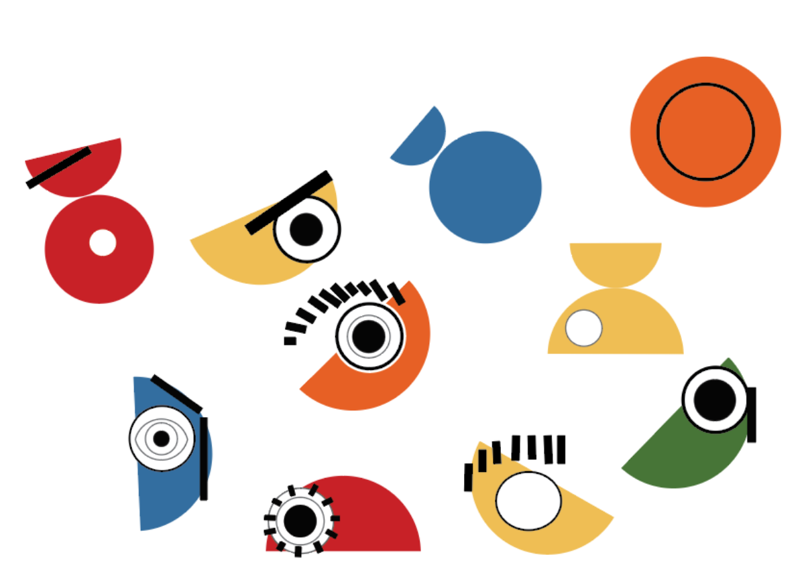
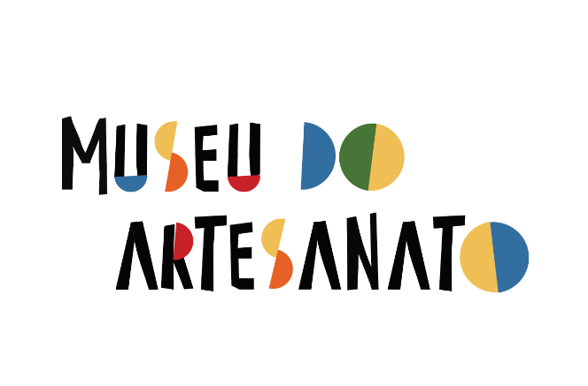
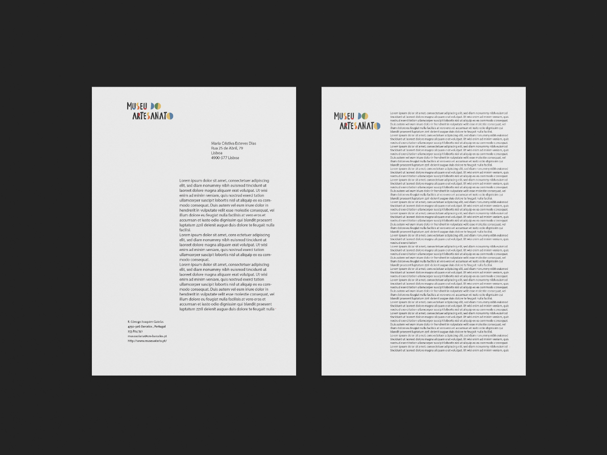
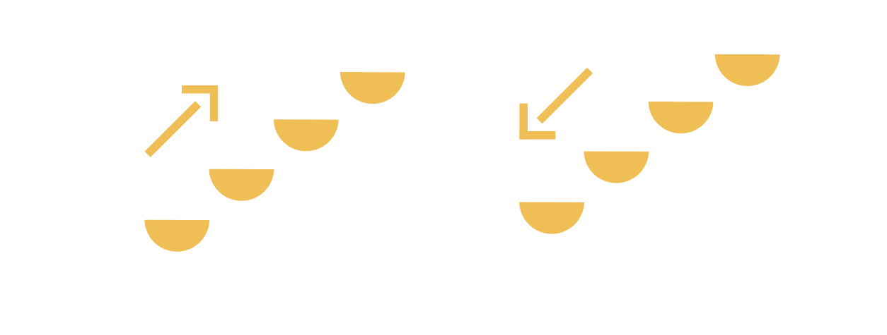
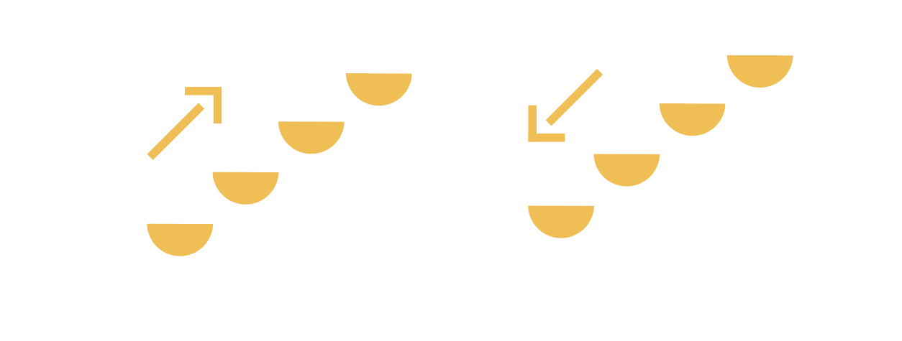
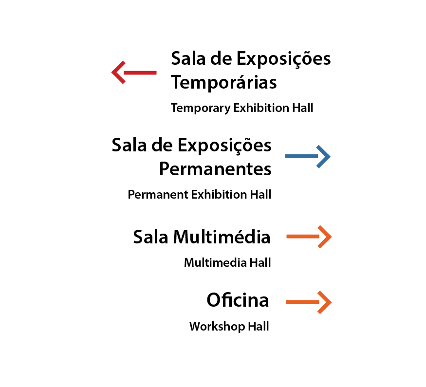
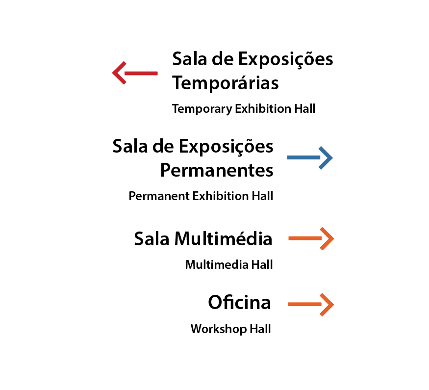

This project consisted of restructuring the identity of an Institution - The Pottery Museum. The proposal was divided into phases, among which, the research, references, the concept and the elaboration. The first phase consisted of getting to know the institution and its objectives. Hence there was an understanding that the Museum intends to keep Barcelense handicrafts alive, as well as the National, through its dissemination. Understanding how other entities of the kind disseminate and fulfill their objectives is essential for terms of reference. Another important phase was the concept. The question that arose to reach him was: What professions / cultures exist with identical habits to those who practice this profession? The tribes. Both make crockery for everyday life and both make figures for both festivities and children's play. Uniting the tribe with the importance that the Museum of Pottery gives to the Craftsman, the concept was defined. Tribe / Craftsman.
For the elaboration of the brand, it was necessary to know the work of each Barcelense artisan and of the artisans in general and, from there, develop an illustration for each family. The goal was to create the same language for each illustration, hence the repetition of the circles, half the circle and a dash. From these forms the brand was created.
The colors chosen were influenced by the colors of Pottery and Figurative. The manual format was influenced by the artisan's signature on the clay piece. The name of the institution has been changed. Handicrafts encompass both Pottery (crockery) and Figurado (pieces that relate to everyday life / satires).



 

 



The Institution's plaque was developed to publicize the Museum, but also to captivate the target audience. This means of communication was developed so that you can enter it Inside are phrases from the popular Portuguese, but modified for the context of handicrafts."Foram muitas anos a virar Galos." (It has been many years to become cocks.)"Agora vou pintar o Diabo." ("Now I'm going to paint the devil.) Phrases like this would be inside the building to portray a little bit of the day-to-day life of this rich profession that is the Craftsman.